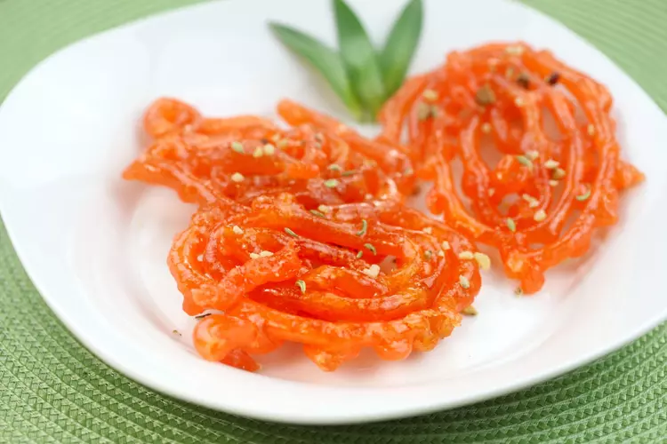
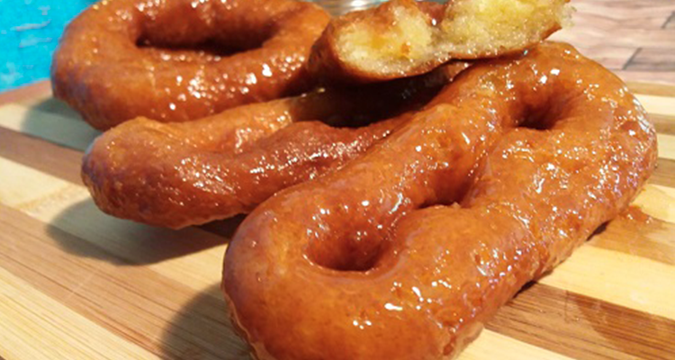
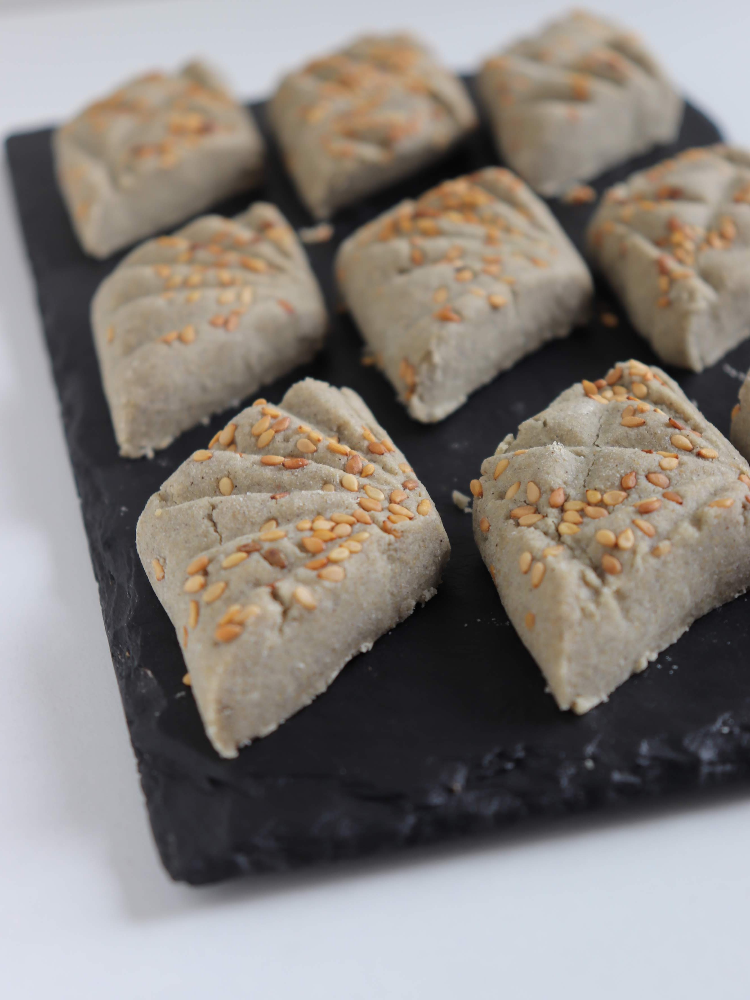
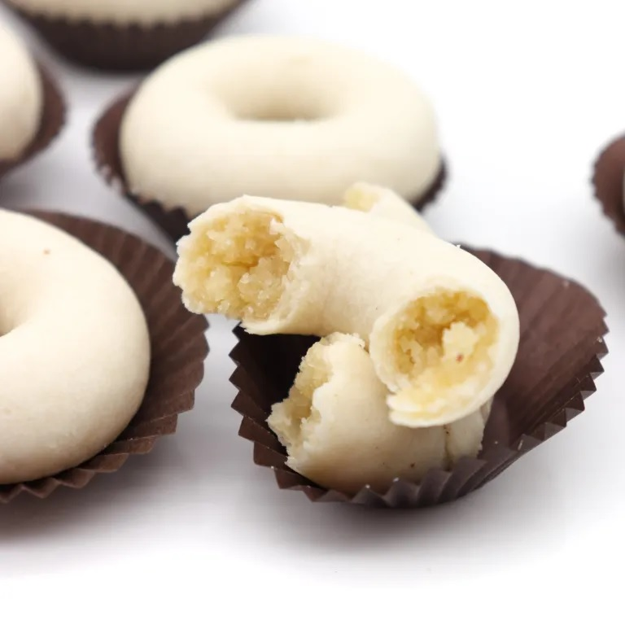
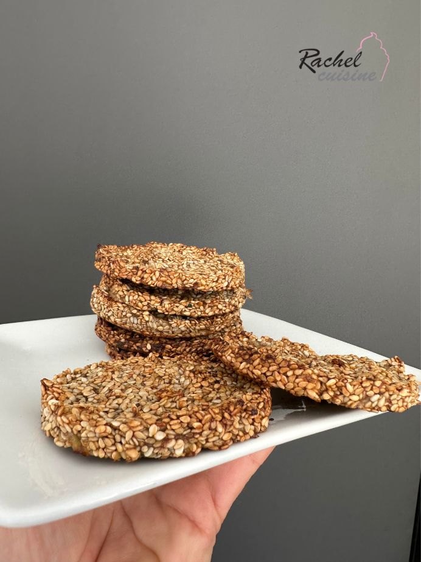
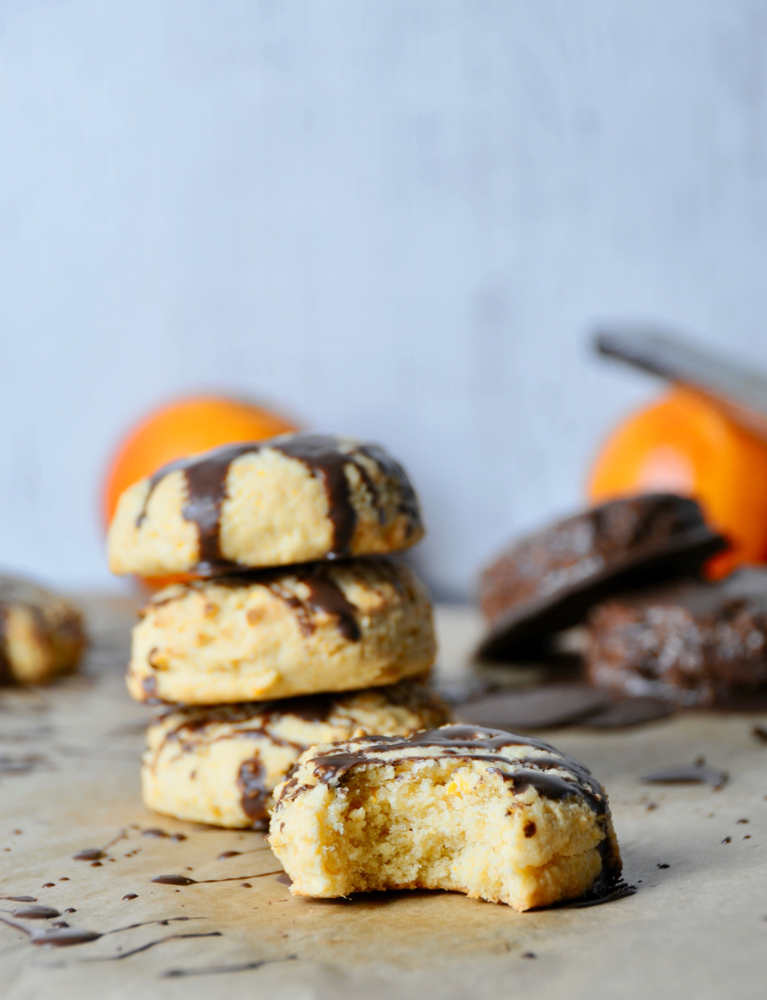

Nos pâtisseries tunisiennes
Découvrez les spécialités proposées au Seabel Rym Beach.

ZlabiaLa Zlabia est une pâtisserie tunisienne croustillante et délicatement caramélisée, préparée à partir d’une pâte légère puis plongée dans un sirop parfumé.
MkharekLe Mkharek est une pâtisserie tunisienne traditionnelle, croustillante à l’extérieur et moelleuse à l’intérieur, délicatement nappée de sirop. Ghrayba Pois ChicheBiscuit tunisien traditionnel, friable et fondant, préparé à base de farine de pois chiche.
Ghrayba Pois ChicheBiscuit tunisien traditionnel, friable et fondant, préparé à base de farine de pois chiche. Ghrayba FarineBiscuit tunisien traditionnel très friable et fondant, apprécié pour sa texture légère.
Ghrayba FarineBiscuit tunisien traditionnel très friable et fondant, apprécié pour sa texture légère.
Ghrayba SorghoBiscuit traditionnel tunisien préparé à base de farine de sorgho, avec une saveur rustique et caractéristique. MakroudhGrand classique de la pâtisserie tunisienne, préparé à base de semoule et garni d’une pâte de dattes, puis parfumé et nappé d’un sirop léger.
MakroudhGrand classique de la pâtisserie tunisienne, préparé à base de semoule et garni d’une pâte de dattes, puis parfumé et nappé d’un sirop léger. SamsaFine pâtisserie croustillante, façonnée à partir de feuilles délicates puis dorée et légèrement enrobée de sirop.
SamsaFine pâtisserie croustillante, façonnée à partir de feuilles délicates puis dorée et légèrement enrobée de sirop.
Kaak SimpleBiscuit tunisien croquant et parfumé, souvent relevé de graines d’anis.
Croquant SésameBiscuit sec et croustillant généreusement parsemé de graines de sésame.
Biscuit à l’OrangePetit biscuit sec et délicat, parfumé à l’orange pour une note fraîche et naturellement fruitée. Biscuit au CitronBiscuit sec aux notes fraîches et légèrement acidulées de citron.
Biscuit au CitronBiscuit sec aux notes fraîches et légèrement acidulées de citron. Biscuit à l’AnisBiscuit traditionnel parfumé aux graines d’anis, apprécié pour son goût délicat et aromatique.
Biscuit à l’AnisBiscuit traditionnel parfumé aux graines d’anis, apprécié pour son goût délicat et aromatique. Biscuit CocoPetit gâteau sec à la noix de coco, délicatement parfumé et légèrement moelleux.
Biscuit CocoPetit gâteau sec à la noix de coco, délicatement parfumé et légèrement moelleux. Petit-four à la ConfiturePetit biscuit fondant assemblé ou garni d’une touche de confiture, pour une note fruitée.
Petit-four à la ConfiturePetit biscuit fondant assemblé ou garni d’une touche de confiture, pour une note fruitée. Gâteau aux DattesGâteau moelleux associant une pâte délicate à la douceur naturelle des dattes.
Gâteau aux DattesGâteau moelleux associant une pâte délicate à la douceur naturelle des dattes.